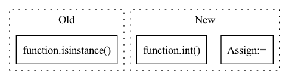

Pattern ID :4
Before Change
continue
data[key] = []
for i in range(seq_len):
if isinstance( indices, tuple) : // continuous
mu_idx, sigma_idx, missing_idx = indices
if x[i, 0, missing_idx] > 0:
data[key].append(None)After Change
data[key].append(x[i, 0, mu_idx].item() * props["std"] + props["mu"])
elif props["type"] in ["count"]:
r_idx, p_idx, missing_idx = props["indices"]
if x[i, 0, missing_idx] > 0:
data[key].append(None)
else:
sample = x[i, 0, r_idx].item() * props["range"] + props["min"]
data[key].append(int( sample) )
elif props["type"] in ["categorical", "ordinal"]:
ml_value, max_x = None, float("-inf")In pattern: SUPERPATTERN
Frequency: 3
Non-data size: 3
Instances Fragment ID: 1943
Project Name: sdv-dev/deepecho
Commit Name: 34041944c7ea56b7a9b77b8fd74c398732f1c321
Time: 2020-07-12
Author: kevz@mit.edu
File Name: deepecho/par.py
M Class Name: PARModel
N Class Name: PARModel
M Method Name: _tensor_to_data(2)
N Method Name: _tensor_to_data(2)
M Parent Class: DeepEcho
N Parent Class: DeepEcho
M File Name: deepecho/par.py
N File Name: deepecho/par.py
M Start Line: 260
M End Line: 274
N Start Line: 344
N End Line: 366
Before Change
logging.disable(logging.NOTSET)
def step(self, action):
if isinstance( action, numpy.ndarray) :
action = numpy.argmax(action)
predicted, finish, predicted_str = self._predict(vocab_id=action)
reward = self.get_reward(self.input_item, predicted, finish)After Change
// Filter out values <= 0
top_k_values = top_k_values[top_k_values > 0]
top_k_indices = top_k_indices[:len(top_k_values)]
action = [elem for n, elem in zip(top_k_values, top_k_indices) for _ in range(int( n) )]
predicted, finish, predicted_str = self._predict(vocab_id=action)
reward = self.get_reward(self.input_item, predicted, finish) Fragment ID: 1944
Project Name: voidful/textrl
Commit Name: 285b19d7c0829ec1176b5c61e6ed3960744d307c
Time: 2023-02-06
Author: voidful.stack@gmail.com
File Name: textrl/environment.py
M Class Name: TextRLEnv
N Class Name: TextRLEnv
M Method Name: step(2)
N Method Name: step(2)
M Parent Class: gym.Env
N Parent Class: gym.Env
M File Name: textrl/environment.py
N File Name: textrl/environment.py
M Start Line: 33
M End Line: 35
N Start Line: 34
N End Line: 41
Before Change
else:
data[key].append(x[i, 0, mu_idx].item())
elif isinstance( indices, dict) : // categorical
ml_value, max_x = None, float("-inf")
for value, idx in indices.items():
if x[i, 0, idx] > max_x:After Change
if key == "<TOKEN>":
continue
data[key] = []
for i in range(seq_len):
if props["type"] in ["continuous", "datetime"]:
mu_idx, sigma_idx, missing_idx = props["indices"]
if x[i, 0, missing_idx] > 0:
data[key].append(None)
else:
data[key].append(x[i, 0, mu_idx].item() * props["std"] + props["mu"])
elif props["type"] in ["count"]:
r_idx, p_idx, missing_idx = props["indices"]
if x[i, 0, missing_idx] > 0:
data[key].append(None)
else:
sample = x[i, 0, r_idx].item() * props["range"] + props["min"]
data[key].append(int( sample) )
elif props["type"] in ["categorical", "ordinal"]:
ml_value, max_x = None, float("-inf") Fragment ID: 1946
Project Name: sdv-dev/deepecho
Commit Name: 34041944c7ea56b7a9b77b8fd74c398732f1c321
Time: 2020-07-12
Author: kevz@mit.edu
File Name: deepecho/par.py
M Class Name: PARModel
N Class Name: PARModel
M Method Name: _tensor_to_data(2)
N Method Name: _tensor_to_data(2)
M Parent Class: DeepEcho
N Parent Class: DeepEcho
M File Name: deepecho/par.py
N File Name: deepecho/par.py
M Start Line: 260
M End Line: 274
N Start Line: 344
N End Line: 366
Before Change
labels = sorted({row[self.columns[-1]] for row in data})
// Determine number of labels, account for regression tasks
return 1 if [x for x in labels if isinstance( x, float) ] else len(labels)
def process(self, data):
After Change
column = self.columns[-1]
// Return length of labels if it"s an array
length = self.length(data[column][0] if hasattr(data, "columns") else data[0][column])
if length:
return length
if hasattr(data, "map"):
// Hugging Face dataset
labels = sorted(data.unique(self.columns[-1]))
elif hasattr(data, "columns"):
// Polars/pandas DataFrame
labels = sorted(data[self.columns[-1]].unique())
else:
// List of dicts
labels = sorted({row[self.columns[-1]] for row in data})
// Labels are single numeric values per entry
// - Consider a regression task if at least one label isn"t an integer
// - Otherwise use number of labels for a classification task
return 1 if [x for x in labels if float(x) != int( x) ] else len(labels)
def process(self, data):
Fragment ID: 1947
Project Name: neuml/txtai
Commit Name: cd089d63645179829017fdfc2b351c8717d592e4
Time: 2022-11-29
Author: 561939+davidmezzetti@users.noreply.github.com
File Name: src/python/txtai/data/base.py
M Class Name: Data
N Class Name: Data
M Method Name: labels(2)
N Method Name: labels(2)
M Parent Class:
N Parent Class:
M File Name: src/python/txtai/data/base.py
N File Name: src/python/txtai/data/base.py
M Start Line: 86
M End Line: 98
N Start Line: 89
N End Line: 109